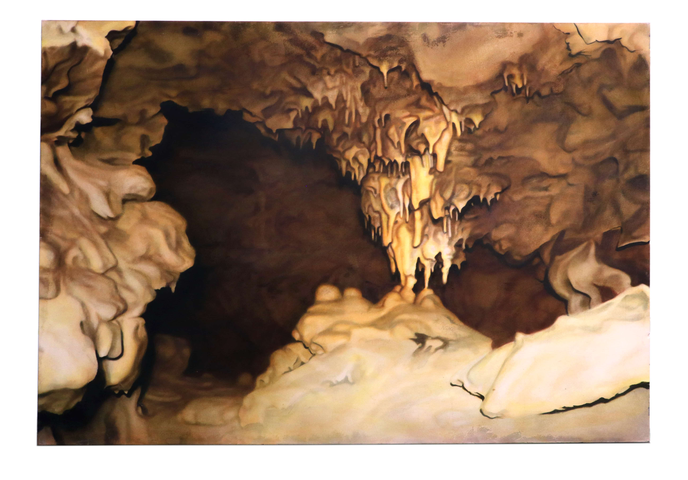
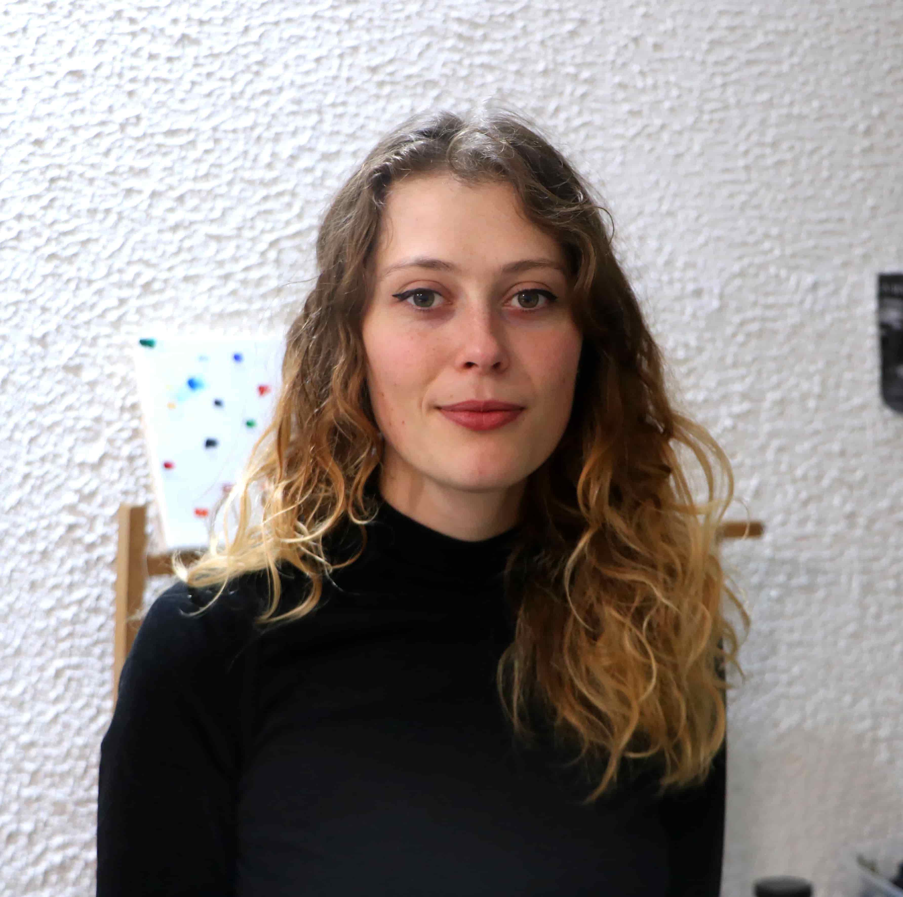

[ Image à ajouter ]

Collectif Bétonite
Avec Jean-Baptiste Petit, Thomas Jacoulet et Hippolyte Tessier. Pratique collective de fresque, dessin, édition, vidéo et installation autour des mondes souterrains.
Duo avec Jean-Baptiste Petit
Travail sur la représentation du territoire et de ses vestiges industriels autour des techniques d'impression artisanales avec une approche expérimentale.
Avec Jean-Baptiste Petit, Thomas Jacoulet et Hippolyte Tessier.
Pratique collective de fresque, dessin, édition, vidéo et installation autour des mondes souterrains.
Travail sur la représentation du territoire et de ses vestiges industriels autour des techniques d'impression artisanales avec une approche expérimentale.
MANAA, École Estienne, Paris
DMA Gravure, Mention très bien, École Estienne, Paris
FCND (Formation Complémentaire Non-Diplomante) : Septembre – Octobre — Stage à l'atelier de lithographie Clot, Paris. Travail sur machine plate et édition d'une de mes lithographies. Novembre – Décembre — Stage à l'atelier associatif Bo Halbirk, Paris. Janvier – Février — Stage aux ateliers Morets, en impression taille-douce et accompagnement d'artistes, Paris. Mars – Mai — Stage auprès de Jacques Brejoux et Nadine Dumain au Moulin du Verger, en fabrication artisanale de papier (selon une reconstitution des techniques traditionnelles en France du XVIIe siècle), recherche autour de ce sujet, Puymoyen. Juin — Stage auprès de l'artiste-graveur Pablo Flaiszman, Paris.
DNA art, félicitations du jury, atelier Peinture(s), HEAR, Strasbourg
DNSEP art, félicitations du jury, atelier Peinture(s), HEAR, Strasbourg
Exposition Pourigord avec Jean-Baptiste Petit, Garage Coop, Strasbourg
Exposition collective Pointe et Burin, Graveurs de l'Est de la France, Fondation Taylor, Paris
Exposition collective Mordu·e·s, galerie Le Préau, Maxéville
Résidence et restitution en duo avec Jean-Baptiste Petit, espace Bouchor, Art-sous-x, Paris
Exposition Paysages incertains, MISHA (Maison Interuniversitaire des Sciences de l'Homme – Alsace), Strasbourg. Artiste-intervenante au cycle de conférence Paysages incertains.
Exposition Cave of Doom, collectif Bétonite, carte blanche Central Vapeur, Festival Central Vapeur 2023, Maison Rose, Strasbourg
Exposition collective Jouer dans la tempête, Fabrikulture, Hegenheim
Finaliste du prix de gravure Gravix, exposition à la Fondation Taylor, Paris
Exposition Le Temple de la Pierre qui Tue, collectif Bétonite, Forte Prenestino, CrackFestival 2024, Rome, Italie
Exposition collective et co-curation de Sortie de route, 22Galerie, Pleins Feux 2024, Ivry-sur-Seine
Exposition au Pavillon Comtesse de Caen, Prix de dessin Pierre David-Weill, Institut de France, Paris
Exposition Le Puits du Dindon, collectif Bétonite, carte blanche Central Vapeur, Festival Central Vapeur 2025, BCDM, Strasbourg
Exposition pour le Prix Unique du Livre, 5e Biennale internationale de design graphique, Le Signe, Centre National du Graphisme, Chaumont — puis Stiftung Buchkunst, Best Book Design from all over the World 2025, Francfort, Allemagne
Résidence en carte blanche à La Menuiserie, Le Quesnel-Aubry, Picardie. Recherche autour des anciennes carrières de l'Oise.
Collaboration Orféo avec le Paris Mozart Orchestra dirigé par Claire Gibault, concert à la Cité de la musique, Philharmonie de Paris
Exposition collective 22 Years Later, 22Galerie, Ivry-sur-Seine
Exposition collective Monotype & Collection, Clermont, en lien avec le FRAC Picardie, curatée par Clément Fourment
Duo show avec Guénaëlle de Carbonnières, Drawing Now 2026, Carreau du Temple, Paris, avec la Galerie Binome
Exposition collective Enterrer le soleil, Le Quadrilatère, Beauvais, curation Lucy Hofbauer et Alexandre Estaquet-Legrand
Lauréate du prix de gravure Gravix 2026, exposition collective Gravix 2026 à la Fondation Taylor, Paris
Résidente à la Casa de Velasquez, Madrid
Bourse d'aide à la recherche et à la création littéraire de la ville de Strasbourg, avec le collectif Bétonite
Finaliste du prix de gravure Gravix, Fondation Taylor, Paris
Finaliste deux années consécutives du Prix Théophile Schuler de la SAAMS (Société des Amis des Arts et des Musées de Strasbourg)
Sélection du livre Le Temple de la Pierre qui Tue, collectif Bétonite, par Le Signe, Centre National du Graphisme, Chaumont, pour le Prix Unique du Livre
Bourse Jeun'Est de la région Grand Est pour l'exposition Le Puits du Dindon, collectif Bétonite
Premier prix Pierre David-Weill, décerné par l'Académie des beaux-arts, Paris
Lauréate d'un atelier de la ville de Strasbourg au Bastion 14
Lauréate du prix de gravure Gravix 2026, Fondation Taylor, Paris
«L'œuvre au noir d'Amélie Royer», double page parue dans les Saisons d'Alsace, revue trimestrielle des éditions DNA (Dernières Nouvelles d'Alsace), numéro 103. Interview/visite d'atelier, par Hervé Levy et Laurent Réa.
«Tête-à-tête avec Amélie Royer, 1er Prix de Dessin Pierre David-Weill», portrait vidéo diffusé sur les réseaux de l'Académie des beaux-arts.
Intermédialités — Histoire et théorie des arts, des lettres et des techniques, numéro 45, Réinventer (le paysage), sous la direction de Hélène Ibata et Gwendolyne Cressman : «Bunker peinture totale», collectif Bétonite.
Cours de gravure à l'atelier associatif Bo-Halbirk, Paris
Atelier de dessin collaboratif, CrackFestival 2024, Rome, Italie, avec le collectif Bétonite
Atelier de dessin collaboratif très grand format, invitation de David Vanderh - La Gilda, Festival Tenderete, Valence, Espagne, avec le collectif Bétonite
Présentation de mon travail autour des anciennes carrières de Picardie à l'école primaire Saint-André Farivilliers, Picardie, à l'occasion de ma résidence à La Menuiserie. Deux ateliers animés.
